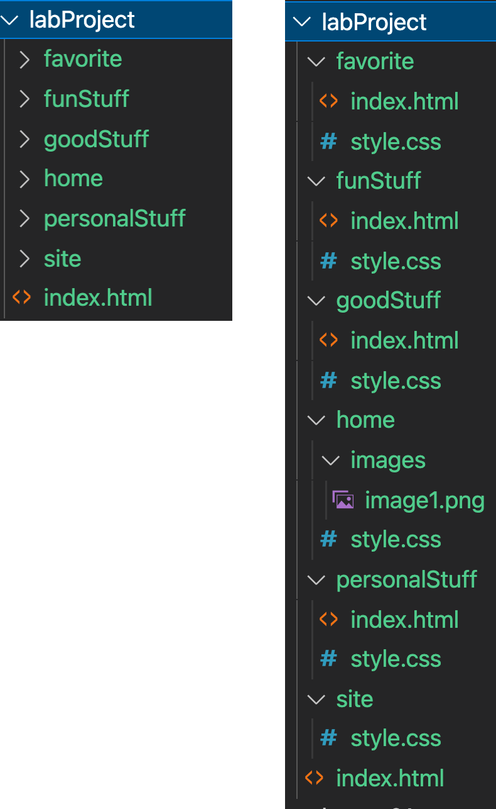
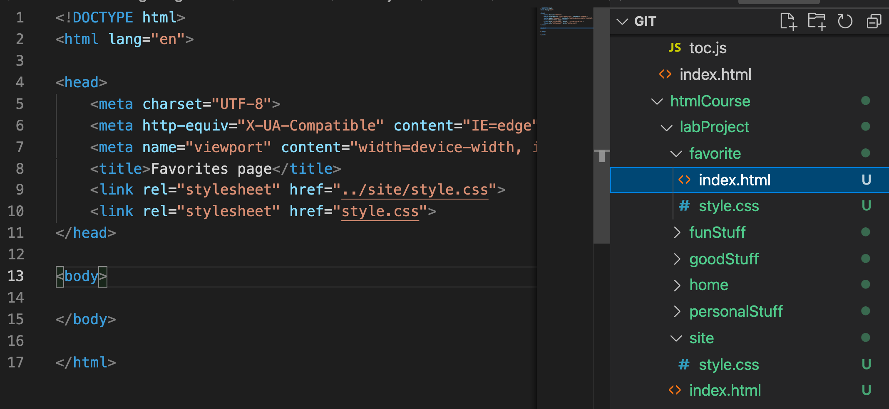

Lab Project | Part II
One Awesome Home Page
Overview
This course will have 3 labs (lessons 2, 4 and 6). Each lab will build on the previous lab, applying the concepts learned in other class sessions. For this second lab, we are going to focus on the rest of the html files that we'll use in the project.
Project OverviewInstructions
-
Review the Project Overview so that you are familiar with the website that you are going to build.
-
Examine the following image showing the project architecture. Ensure that your project architecture matches this project architecture (files, folders and their locations).
Notice the site folder. This is for any content that will need to be on multiple pages. For example, if I need an image to show up on multiple pages, I should put it in here, or if I want the navbar or the body of every page to look the same or have the same structure, I would put those styles into this
site/style.cssand then in each html file, I would reference both css files like this:
 -
Now that you have the project architecture all set up, you are ready to open the following html files, and finish them up.
-
Complete the
Favorite Stuffpage according to the Project Requirements in the Project Overview page. -
Complete the
Fun Stuffpage according to the Project Requirements in the Project Overview page. -
Complete the
Good Stuffpage according to the Project Requirements in the Project Overview page. -
Complete the
Personal Stuffpage according to the Project Requirements in the Project Overview page.
Conclusion
Congratulations! You have all the pages built for your new website. Next time, we will focus on three things:
-
Cleaning up code
-
Creating media queries to make site look good on all screens
-
Deploying the website to the web